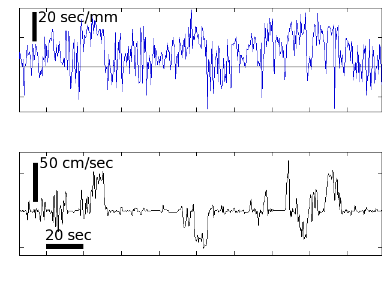
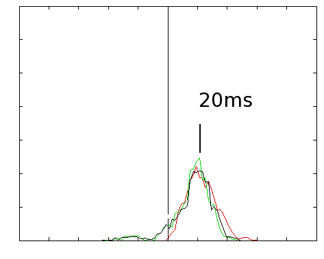
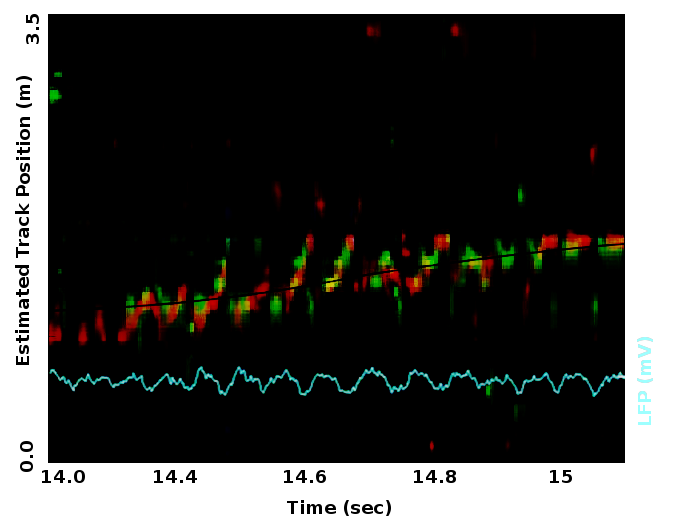
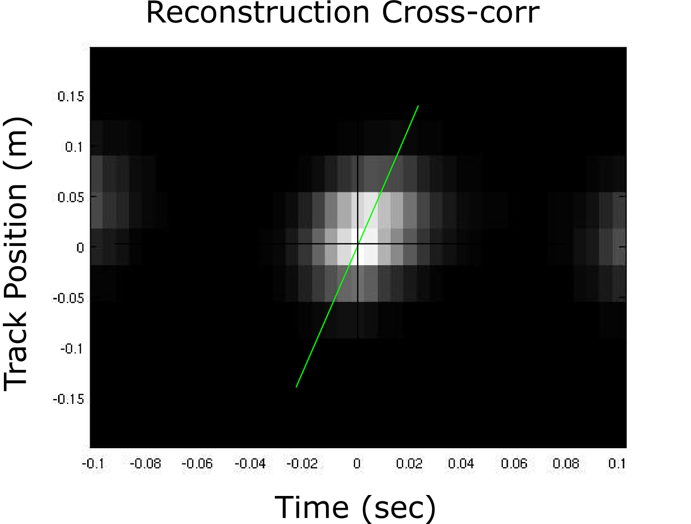
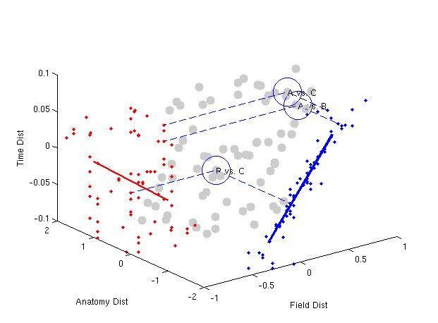

MWL Lab Meeting
Greg Hale
October 28, 2014
Overview
- Traveling theta waves & their impact on place cell timing
- Real-time decoding - performance debugging
Theta oscillations within CA1 differ in phase
 LFP recorded from three tetrodes
LFP recorded from three tetrodes
Traveling wave is a good fit for profile of phase offsets
 Siapas traveling wave
Siapas traveling wave
Traveling wave is a good fit for profile of phase offsets
 Traveling wave model parameters
Traveling wave model parameters
Variability in traveling wave parameters
 Traveling wave model parameters, fit over time
Traveling wave model parameters, fit over time
Multi-unit spiking roughly follows the traveling wave
 Different tetrodes' MUA phase preference vs. a single LFP channel
Different tetrodes' MUA phase preference vs. a single LFP channel
"CA1 theta phase locking" becomes ambiguous. Which theta phase?
- CA3/CA1, DG/CA1, EC/CA1, phase relationships (Mizuseki, 2012)
- Specific +/- currents in various CA1 dendritic segments (Leung, 1984)
- CA3/CA1 low gamma coupling, EC/CA1 high gamma coupling (Colgin, 2012)
- PV cell, O-LM cell cell, septal cells firing phase (Freund, Klausburger)
- Functional roles for theta phases
- Theta phase precession
Place cell spike timing: theta sequences
Two complementary views of theta sequences
View A
- Reconstruct trace position
- Time-compressed sequences every cycle
- ~1 meter per theta cycle
- ~8 meters per second (~15x speedup)
View B
- Time-x correlate place cell pairs
- E.g. cell A is 0.4 meter beyond cell B,
- Cell A fires 75 ms later
- 5.3 meters/sec virtual running (~ 10x speedup)
Accounting for traveling wave in theta sequences
- Prediction
- Find mean LFP traveling wave parameters
- Convert to predicted time offset between anatomical points
- Measurement
- View A Divide cells into early/late theta groups and compare theta sequences
- View B Factor anatomical separation into time offset regression
- Technical limitations
- Would like to partition cells into many small groups, but need many cells to decode theta sequences
- Would like to account for cycle-to-cycle variability, but have to pool data across time to overcome noise
- Compromise - focus on evaluating the simple case here to answer basic question, followup with many more tetrodes for more precise picture
Traveling wave parameters and variability


- Left top Timecourse of expected time offset per anatomical mm along medial-lateral axis
- Left bottom Running speed
- Right Expected time-offset distribution along the medial-lateral axis
Measuring timing differences in reconstructed theta sequences
Grouped position reconstruction
Measuring timing differences in reconstructed theta sequences
Position reconstruction cross-correlation
Measuring timing differences in place cell pairs
Measuring timing differences in place cell pairs
Place cell pairs regression